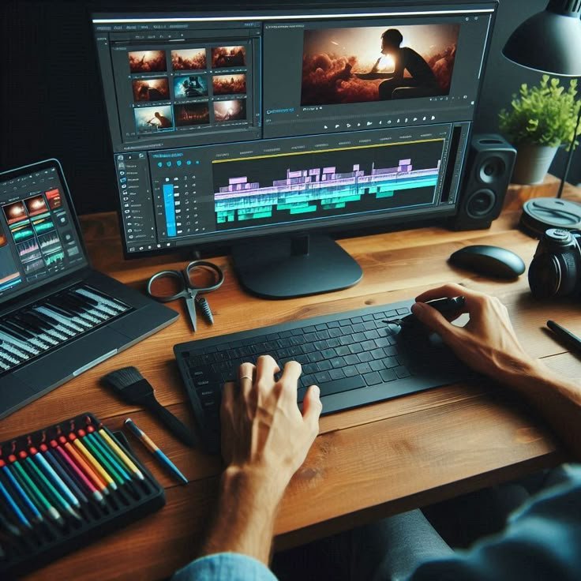

Un buen audio puede hacer que una producción pase de buena a excepcional. El sonido refuerza la narrativa y la emoción, siendo el elemento que une todos los componentes visuales en una historia. Desde la música hasta los diálogos, cada detalle sonoro contribuye a la atmósfera y al impacto final de la producción.
En este artículo, profundizaremos en el rol fundamental del audio en la producción audiovisual, destacando las técnicas y herramientas que permiten alcanzar una calidad sonora impecable. Comprender cómo se gestiona y optimiza el sonido es esencial para crear experiencias que realmente conmuevan al espectador.
El sonido no es simplemente un complemento visual, sino un protagonista que define el tono y la emoción de la historia. Una banda sonora bien diseñada puede intensificar momentos dramáticos, generar suspenso o incluso aportar un toque de humor. La correcta sincronización y calidad del audio aseguran que el mensaje se transmita de manera clara y eficaz.
Además, el audio contribuye a la inmersión del espectador, haciendo que se sienta parte de la escena. La utilización de ambientes sonoros y efectos precisos puede transformar una producción y ofrecer una experiencia más rica y envolvente.
La producción de audio de alta calidad requiere el uso de herramientas especializadas y técnicas avanzadas. Software como Pro Tools, Adobe Audition y Logic Pro son fundamentales para la edición, mezcla y masterización del sonido.
Estas plataformas permiten trabajar con múltiples pistas, ajustar niveles, ecualizar frecuencias y aplicar efectos que enriquecen la experiencia auditiva. La integración de estos procesos es esencial para lograr un sonido que cumpla con los estándares profesionales del sector audiovisual.
El audio tiene el poder de evocar emociones profundas y conectar con el espectador a un nivel personal. La música, cuando se utiliza adecuadamente, puede marcar el ritmo de la narrativa, realzando momentos clave y subrayando giros en la historia.
Asimismo, los efectos sonoros añaden realismo y autenticidad, permitiendo que cada escena cobre vida de manera única. Este impacto emocional es lo que diferencia una producción ordinaria de una experiencia verdaderamente memorable.
El poder del sonido en la producción audiovisual es innegable. Un audio de calidad no solo complementa la imagen, sino que eleva la narrativa y enriquece la experiencia del espectador. Invertir en una buena producción sonora es clave para transformar una historia en una experiencia inolvidable.
Dominar las técnicas de producción de audio y utilizar las herramientas adecuadas puede marcar la diferencia en el resultado final de cualquier proyecto. Explora y comprende su importancia aquí y descubre cómo el sonido puede revolucionar tu producción.
Categorías: Audio, Producción